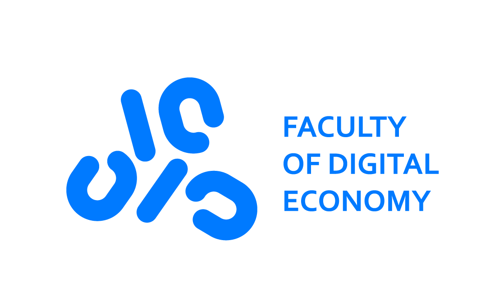

О факультете
01
Факультет цифровой экономики БГЭУ готовит междисциплинарных специалистов, обладающих знаниями в информационных технологиях, экономике и управлении, а также владеющих иностранным языком на профессиональном уровне.
02
Учебные планы факультета сбалансированы так, чтобы студенты могли получить глубокие теоретические знания и практические навыки по выбранной ими специальности, а также базовую подготовку по общим дисциплинам
03
Факультет предлагает богатую студенческую жизнь: научные конференции, встречи со спикерами, развлекательные выступления, интеллектуальные состязания, спортивные мероприятия и многое другое.
04
Во время летней практики студенты могут применить на практике знания, полученные во время учебного года, чтобы после выпуска иметь в своем резюме реальный опыт по выбранной специальности.
05
Выпускники факультета имеют возможность заниматься аналитикой, управлением проектами, веб-дизайном, интернет-маркетингом, тестированием и разработкой ПО.
06
Студенты и выпускники факультета цифровой экономики востребованы в ИТ-компаниях, банках, маркетинговых агентствах, в ИТ-подразделениях предприятий.
Специальности
Специальности